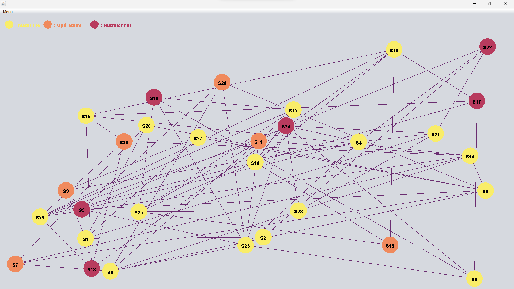
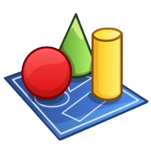
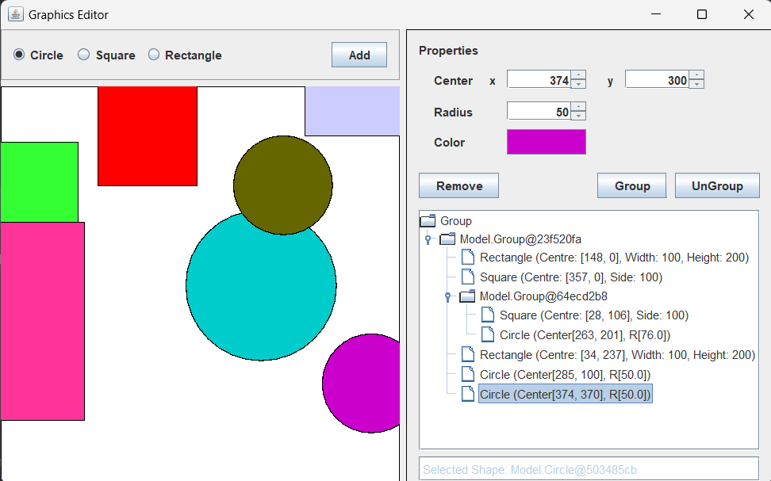

Salut, moi c'est Christopher
Je suis un étudiant en informatique basé à Villeurbanne, près de Lyon.
🚨 À la recherche d'un stagiaire ? 👀

Je suis un étudiant en informatique basé à Villeurbanne, près de Lyon.
🚨 À la recherche d'un stagiaire ? 👀

Je m'appelle Christopher, un jeune passionné de 19 ans au seuil d'une carrière prometteuse en développement informatique. Actuellement, je me trouve dans les premiers pas de mon parcours en tant que développeur débutant, une aventure qui m'excite autant dans le domaine du développement web que dans celui du développement de logiciels.
Mon ambition est de trouver un stage enrichissant, qui serait l'occasion idéale de mettre en pratique et d'approfondir mes connaissances acquises au cours de ma deuxième année de BUT informatique. Je suis à la recherche d'une expérience de stage significative, d'une durée approximative de 10 mois, débutant le 15 avril 2024. Ce stage serait non seulement une étape déterminante pour mon développement professionnel, mais aussi une chance exceptionnelle de plonger dans les défis pratiques et innovants du développement informatique, tout en apportant ma propre touche de créativité et de passion dans ce domaine fascinant.

EduQuiz est un site qui offre la possibilité aux utilisateurs d'étudier et d'apprendre leurs leçons, termes et définitions tout en se divertissant grâce à des quiz générés automatiquement à partir de listes créées ou partagées.

Il s'agit d'une application qui analyse un fichier CSV détaillant un réseau de centres de santé et les routes les reliant. Son objectif est de trouver le chemin le plus sûr ou le plus rapide entre ces centres, en considérant les particularités de chaque centre, comme le type de services offerts, et les divers risques associés à chaque itinéraire.




Ce projet est un éditeur de scènes virtuelles utilisant les design patterns Composite et Factory dans une architecture MVC. Il permet de créer, modifier, et gérer des formes géométriques et objets complexes dans une scène interactive, avec des fonctionnalités de groupement et de propriétés personnalisables.
Rien pour le moment...
Prenons contact.
Connectons-nous.
Jetez un œil à mes dépôts.